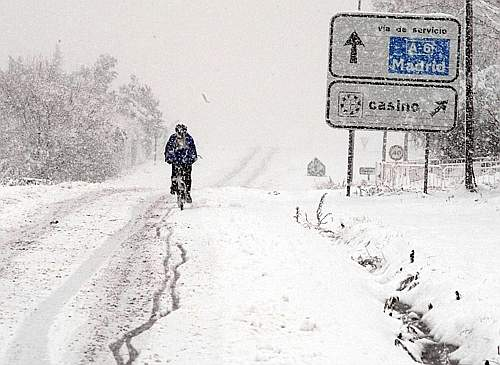

|
Edinburghcapitale de l'Écosse depuis 1532célèbre pour son festival, le plus grand du monde, ainsi que pour sa prestigieuse université, pionnière dans les domaines de l’informatique, la géologie, la chimie et la médecine Madrid |
|---|
Pour situer une ville sur la carte de l'Europe, veuillez cliquer sur sa photo.
Les villes suivantes constituent de magnifiques choix de destinations pour les voyages d'étude, particulièrement en plein mois de février.
|
|
Edinburghcapitale de l'Écosse depuis 1532célèbre pour son festival, le plus grand du monde, ainsi que pour sa prestigieuse université, pionnière dans les domaines de l’informatique, la géologie, la chimie et la médecine Madrid |
|---|
|  |
Madridcapitale de l'Espagne depuis 1606considérée comme le principal centre financier de l'Europe du Sud et réputée pour les arts (peinture, architecture), ainsi que pour le football (elle abrite en particulier deux grands clubs: le Real Madrid et l'Atlético de Madrid) |
|---|